What Does Multi-Turn Reinforcement Learning Really Improve in LLM Agents? / 多轮强化学习究竟改善了智能体的什么？
论文信息 Kejian Zhu、Zhuoran Jin、Shangqing Tu 等。中国科学院自动化研究所，中国科学院大学和清华大学合作。arXiv 首版 2026 年 11 月 4 日，研究对象为多轮语言模型智能体。论文原文
代码与项目 作者公开了项目和实现仓库。本轮核验仓库入口可访问，未复跑训练、工具环境或评测。作者实现
给智能体一次执行机会和给它多次交互机会，是两种不同的资源分配。论文先画出两种预算的成功曲线，再让基础模型和强化学习模型在同一个历史前缀上选动作，追踪优势出现在哪一段。BudgetMix 随后把交互上限带进训练采样，检验局部执行和长程成功能否同时受益。
多轮智能体强化学习可以提高长程任务成功率，但这种提高依赖充足的交互预算。预算收紧时，轨迹级收益明显减弱，而单步动作质量也没有随多轮训练普遍提高。
1. 背景和问题
1.1 一条成功轨迹包含不同来源的收益
智能体面对的是由自身动作改变后续可见信息的环境。做一道多轮代码题时，模型可以先提交一个还未覆盖边界的实现，从失败反馈拿到具体用例，再提交修订。数据库代理可以先探查表结构，得到列名后再构造查询，也可能根据运行错误更正类型。类似地，调用外部工具时，模型的一次错误参数会导致拒绝，新的错误消息却可能直接指出不被支持的字段。在这些任务中，终局验证器能确认最终代码通过测试、查询返回正确结果或工具链按规范完成。它无法仅凭一个成功标签说明策略如何到达这个终点。首次选对、错后迅速返回正轨、走较长但成功率更高的路线，都可能让最终分数上升。
基础模型与强化学习策略在开放环境里形成的观察分布本身也不同。假设基础模型常在工具列表的起始状态停滞，而强化学习模型较快进入返回错误码的第二阶段。比较两者在线所有动作的平均评分，就会混合“看到哪些状态”和“看到相同状态后怎么做”。基础模型处理的早期状态可能更容易，也可能因失败而提前退出；强化学习策略积累的后段状态则可能更复杂。研究需要把两类问题放在不同分母上：完整轨迹评估保留各策略自行访问状态的能力，配对动作评估固定双方看到的状态与历史，专门测给定前缀的动作差异。在一种评估里更强，在另一种里相近或偏弱，并无逻辑冲突。
终局奖励让上述分解变得尤其重要。成功的轨迹可能含有绕路，失败的轨迹也可能包含很合理的中间动作。若把最终成败作为一整条轨迹共享的反馈，训练会提高某些成功路径的总体概率，也可能把与成功共现的低效率操作带上去。带信用分配的方法会估算不同位置对后续回报的贡献，但估计受可观察状态、重复锚点、策略采样质量和剩余轮数影响。即使一次动作从眼下看不够精确，宽裕预算允许后续借助新反馈补救；对固定上限下的成功目标而言，改善这种补救能力仍然能带来真正的成功率收益。问题在于系统部署的时间和工具配额通常变化，训练得到的路径未必在不同预算下同样划算。
这一区分还关系到“基础模型能力边界”的表达。给同一个起始任务采很多条路径，可以检验基础策略能否在有限采样中产生正确轨迹。交互任务的一条路径包含多个依赖前缀的选择，长程路径上每次决策虽有非零概率，连续踩中可修正、可推进的组合仍然可能极少。曲线在更多采样后依然拉开，意味着这两个策略在当前环境和采样范围内有可观测差异。样本数有限，成功路径概率的尾部也受解码温度和运行约束影响，因此实验可以刻画经验边界，无法穷尽基础模型支持的全部轨迹。论文把这个问题与训练后逐步变得更聪明的说法分开检查。
1.2 两个预算轴
采样宽度是每题可以启动多少条独立轨迹。交互深度是每条轨迹最多做多少轮实际行动。若每题只有一次重试机会，宽度不足可能限制可找到的路径数量。若每条轨迹只有一次操作，启动许多条也无法让任意一条用真实反馈修复自己的动作。将两种资源放到同一个“预算”变量里，就无法判断成功提升依赖并行搜索还是在一条轨迹内持续执行。论文里的轮数是一项环境协议约束：提交代码、移动一步、调用工具可以都计作一轮。每轮输出长度、工具耗时和生成成本依然可能相差很大。在服务中，两条相同轮数的轨迹有可能分别被快速只读请求和慢速外部接口主导，尾延时也会有明显差异。
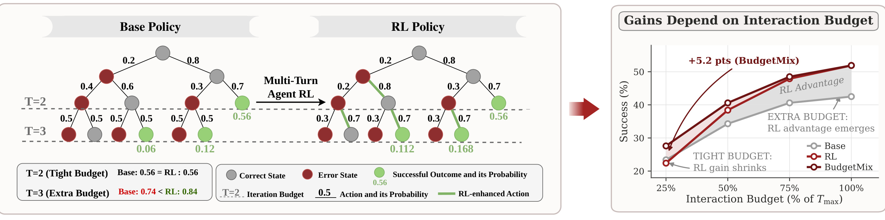
Figure 1 左侧用人为构造的概率树说明为什么短预算可抹平优势。灰色节点代表正确状态，红色节点代表错误状态，绿色终点为成功。基础策略与训练后策略共享起始分支概率。在只能走两轮时，树上能及时抵达的绿色路径都来自同样的第一步与第二步，乘积为零点五六。把允许行动的横线下移一层后，已走进错误或尚未完成的分支还有机会返回。第三轮在基础策略额外带来零点零六与零点一二两条成功路径，而训练后策略对应增加零点一一二与零点一六八。新的总和分别为零点七四和零点八四。此处可见差异来自延伸分支的概率改变，早期共同的成功分支保持一致。右侧把这种预算依赖画成示意曲线，并把混合预算训练作为第三条路线。横轴表示相对各任务最大轮数的比例，纵轴表示成功比例。图上的示意增益不能直接用作总体实测结果，后文表一需要按模型、任务与算法重新读取。它还提示一个可操作的负例：早段动作可以没有进步，甚至某些分支变差，只要后续允许足够修补，总成功率仍可能更高。缩短上限会移除这些可用补救分支，部署表现就可能重新排序。树中的绿色终点应按首次成功的互斥路径相加，不能把两轮已经成功的样本在第三轮重新计一次。右图的用途是把这个机制转换成可检验的曲线形状：同样的紧轮数下比较基础与全预算训练，再观察混合训练是否把低预算端抬高。即使右图方向与实验吻合，示意树里的转移概率也没有用真实任务频率拟合。
预算之于真实任务，还受“是否存在预算内解”约束。例如最短路径本身长于两步的导航任务，任一策略在两步以内都无法抵达终点；这种共同下限不能说明强化学习依赖错误恢复。与之相反，单轮可以提交完整程序的题目原则上可以一次做对。若两种策略在低轮数时都远低于可解上界，但强化学习没有优势，任务结构只能解释部分现象。论文用这类上界检查把“预算太少导致大家无解”与“训练策略在仍有可行解时利用不好较小预算”拆开，再通过同状态、错误状态和训练动态为后一种情况提供证据。
这对推荐和搜索助手也有具体含义。用户第一次询问后给一条候选，和允许继续问偏好、检索库存、改写查询并回退的多轮助手，面对的是不同问题。一次检索命中的用户没有必要为后续修复付出额外调用。参数错误且用户仍在等待时，快速识别错误类型并用合规输入重新调用却可能十分关键。若把最终点击、任务完成或成交全部归到单次策略输出，就会把流程给出的纠错机会也归到模型“第一步更准确”。因此这篇工作的研究问题不是单纯比较分数高低，而是确认优势出现的资源条件、错误位置与学习阶段，并构造能穿越不同预算的训练条件。
2. 方法
2.1 交互轨迹与双轴评测
形式化从任务实例、策略与环境的交替开始。模型接收任务描述、之前看到的观察和自身动作，以及眼前的新观察。根据这个前缀，它生成要交给环境的动作。环境执行动作并返回下一观察，智能体把反馈接到历史上继续。这种写法把外部世界与模型区分开：实际工具的响应不属于策略自由生成的动作，反馈真假、调用时延和权限边界由环境决定。训练在环境提供的终止条件或预算上限处结束一条轨迹，验证器读取结果并给出回报。在线执行虽然还使用这套交互循环，但不需要再给策略做梯度更新。
符号解释：$t$ 为已进入的决策轮，$h_t$ 包含任务、先前交互与当前观察，$\pi$ 是条件动作策略，$a_t$ 是本轮命令或工具调用，$P$ 是环境的观察转移，$o_{t+1}$ 是动作执行后的反馈。环境返回失败消息也属于一次有效观察，是否值得用一轮尝试要由策略在当前预算下判断。回报依赖终点时，学习的对象仍是根据历史执行动作的条件分布。
符号解释：$x$ 表示同一个任务，$\tau^{(i)}$ 是第 $i$ 次独立采样得到的交互轨迹，$K$ 限制轨迹数，$T$ 限制单轨迹交互轮数，$R=1$ 表示官方验证器认可预算内成功。概率事件是至少一条成功。固定 $T$ 后扫 $K$ 得到宽度曲线，固定 $K$ 后扫 $T$ 得到深度曲线。主文深度实验用八条轨迹。表一的一个单元格对应固定模型、任务、算法与交互上限下的至少一次成功率，因此不能直接当作发出一次在线请求的成功率。若相同任务内成功率为 $p$ 且轨迹独立，至少一次成功是 $1-(1-p)^K$，不同任务的难度分布则使总体结果无法由平均 $p$ 直接代入还原。
符号解释：$n$ 是给定任务生成的独立轨迹总数，$c$ 是其中成功条数，$k$ 是评估要选取的轨迹数且不超过 $n$。分母计数从全部轨迹中无放回抽取的组合，分子计数抽中的全是失败轨迹的组合。取补集便得到至少一次成功的估计。附录用这一定义避免为每个横坐标重新随机分组，主文宽度扫描到一百二十八条。对深度轴则应在给定上限的提示和执行规则下生成，而不是把一个长预算策略输出事后截断当作已知短预算时的决策。
2.2 配对状态与策略似然
普通状态池从基础和强化学习轨迹等量选取中间状态，使比较不会只由一种策略能到达的状态决定。固定前缀、观察与剩余预算后，每个策略独立生成多个候选动作，再取该策略在此状态下的平均动作分。FrozenLake 的已知转移可用有限视野动态规划计算选择一个动作后在最优延续条件下的价值，主文的折扣系数为零点九五。DeepCoder-MT 对单次提交独立运行官方单元测试，以通过比例度量此步代码质量。两个任务的评分语义有区别。地图上的价值有未来最优延续假设，代码测试覆盖的是当前提交；它们适合在任务内配对比较，不能把绝对分数跨任务合并为统一动作精度。
符号解释：$s$ 是两模型共享的一个状态和历史，$a_i$ 是第 $i$ 次抽样动作，$G$ 为每策略的抽样数。图四、图五每个点分别聚合该状态两组抽样分，十六次采样降低单次输出偶然性。常规配对设计估计的是条件动作质量。构造错误池时，作者把上一步置换成不正确动作，随后让两个策略都从这个相同的错误前缀采取下一步，另测接着运行后的终局成功。后者让读者区分修正动作评分与实际任务修复。用分阶段分桶时，作者将当前位置除以环境允许的最大轮数，再把动作质量按该位置聚合。这一轴与比较固定单一错误前缀不同，后半段进入池中的样本仍受轨迹存活和任务难度影响。
符号解释：$B$ 为基础策略，$w_{t,j}$ 是该动作的第 $j$ 个词元，$m_t$ 是动作词元数，$w_{t,<j}$ 表示本动作此前生成的片段。固定真实历史后，基础策略给每个动作词元条件概率，取负对数相加衡量动作相对基础策略的惊异度。正文描述具体箱线统计时使用按词元动作 NLL 的口径，式子写的是词元求和，复现需核对归一化代码。动作概率低可能只是表达不同、动作较长或处于更少见历史，它不是动作有害与否的判据。
符号解释：$\tau$ 是实际采样的固定轨迹，$h_i$ 是第 $i$ 轮已记录的历史，$r_i$ 是包括推理文本与动作在内的完整模型响应，$\pi_{\mathrm{RL}}$ 与 $\pi_B$ 是两个评分策略。每轮相对对数似然累加，正值表示这段记录在强化学习策略下相对更常见。相比只看动作词元，完整响应也包含行动前的内部表达和推理内容，故两个量的相对大小不能直接抵消。实际运行时没有把同一条轨迹交给另一策略重走，记录里的工具观察仍固定。这个设计说明策略如何给已有路径重加权，不能识别每个语言片段对任务成功的因果作用。
2.3 过程信号与混合轮次训练
作者先尝试在轨迹终局反馈之外获得过程信号。可解导航环境能把动作到达终点的剩余机会算得相对准确，工具调用任务则难以为每一步提供同类真值。让模型裁判在执行之前，根据任务、历史、观察、剩余轮数和候选动作给零至十分，再除以十，可提供更密集的信用线索。它对必要的中间步骤理论上可以给高分，实际却不知道环境真正会返回什么，也可能奖励看起来合理但无法执行的请求。GiGPO 利用同一任务组的重复锚点做步骤级优势估计，PPO 以 critic 和回报估计构造优势，两者均不自动拥有这种精确的外部过程评分。
符号解释：$T_{max}(x)$ 是任务全轮数，$k$ 枚举十分位档，向上取整得到合法整数，再去掉重复值构成 $\mathcal T(x)$。训练从这些独特的预算值均匀抽一个 $T(x)$。这是按候选整数档抽样，实际含义不是每一次执行成本都均匀。对 GRPO 和 GiGPO，同组所有轨迹共享此次抽到的预算，保证组内成功与失败在相同约束下产生。若组内各轨迹预算不同，优势还会编码有多少行动机会，稀释动作策略的信号。总预算和当前进度写进提示，在每轮告知剩余机会；超时且未成功的轨迹终局奖为零。训练仍采用原有算法，部署时由外部确定上限并维持同样的预算提示协议，无需把多个预算模型在每次请求中混合。
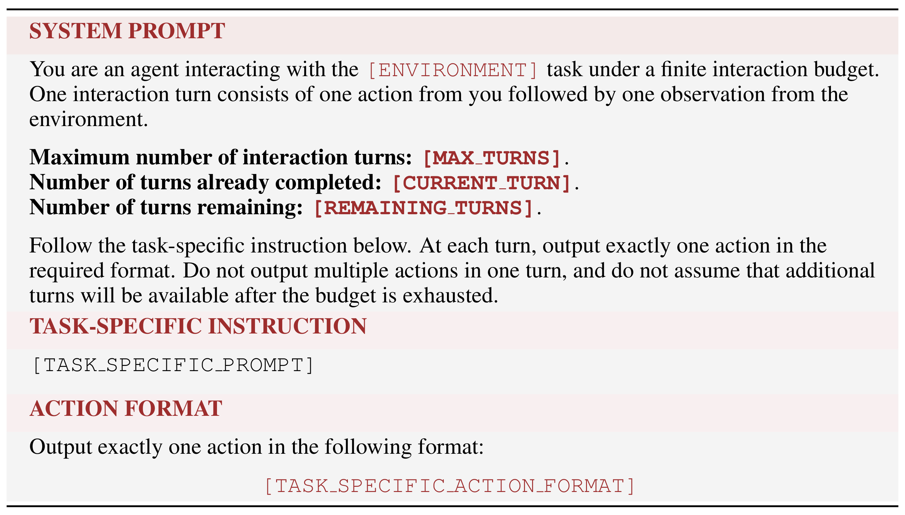
Table 2 展示策略每次采样动作之前会看到什么。最上方系统提示填入环境名称，并把一轮定义为一个模型动作接一个环境观察。下方三个并列字段分别告诉模型总上限、已完成的轮数和可用余量。总量由训练时的组预算或评估设定决定，已完成和剩余随当前轨迹推进。两条轨迹即使处于相同地图位置或面对相同工具消息，只要一个还有三轮、另一个只剩一轮，提示给出的约束就不同。在只剩一轮时，先提交一个探索动作再根据观察修复的计划会超过上限。这个限制改变的是策略行动的条件，不改变任务本身的终局评分规则。
表格中段留给任务专属说明，底部留给该环境要求的单动作输出格式。把固定的预算协议放在系统提示、把各环境差异留在下面，能够让同一个训练框架对接地图、代码、函数调用和数据库环境。输出约定也解释了为什么主文比较的是环境轮数。一次模型生成可能含有很长的内部推理，但它仍只允许提交一个环境动作；反之，一个外部工具返回较慢，等待也不会自动让轮数增加。表里将耗尽后不再假定还有行动机会写成提示约束，实际截断和失败回报仍须由训练或评估运行器实施，模型无法凭提示替自己获得更多轮数。
读取这一模板时，还应把评估条件和训练条件分别锁定。实验在相同任务、上限和提示下比较不同模型，BudgetMix 与全预算训练的区别在训练采样见过的上限分布。在推理时为模型提供总量及余量与论文协议一致。省略计数、允许一轮发出多个工具调用，或者把轮数换成毫秒，会改变模型观察到的约束与动作单位，需要重新测成功曲线。
符号解释：$R_i$ 是第 $i$ 条轨迹的回报，$\operatorname{mean}(R)$ 和 $\operatorname{std}(R)$ 是组内均值和标准差，$\epsilon$ 防止零除，$A_i$ 是相对优势。BudgetMix 的 GRPO 版本先抽任务与组共享预算，再用旧策略采同组轨迹并计算优势，仍按标准 GRPO 与参考策略 KL 约束更新。环境观察和填充词元不计入策略损失。极短预算如果导致整个组全部失败，终局优势趋同，额外增加这类样本并不保证能训练出可行的一步解。
符号解释：$A_i^E$ 是整条轨迹的优势，$A_{i,t}^S$ 是给定轨迹第 $t$ 个锚点的步骤优势，$\omega$ 是混合权重，主实验取一。$R_{i,t}$ 将后续每步奖励 $r_{i,u}$ 以折扣 $\gamma$ 累加至轨迹终点 $T_i$。GiGPO 对齐锚点时还匹配剩余轮数，避免把相同可见位置但执行窗口不同的状态混成一类。PPO 的 actor 和 critic 共享预算条件，在预算耗尽或任务终止处以零 bootstrap。三种算法复用同一个预算变化机制，结果中应逐算法用相同模型规模比较，跨算法的差分还混有优势构造和价值学习的差别。
3. 实验结果
3.1 宽度与深度曲线
四个主要任务包括地图导航 FrozenLake、带迭代提交的代码环境 DeepCoder-MT、函数调用 BFCL-v3 以及交互式 SQL 环境 InterCode-SQL。全量交互上限依次为七十、十、二十四和十轮。主文核心对照从 Qwen3-4B 或 Qwen3-8B 出发，以 GRPO 为主；BudgetMix 表额外报告 GiGPO、PPO。训练基于 VeRL，学习率为百万分之一、权重衰减为百分之一，训练采样温度为一且 top-p 为一，参考策略 KL 系数为千分之一。每任务采十六条轨迹，PPO 也保持这一采样数但不使用组相对优势。评估在同一批任务、模板和预算下进行，采样温度零点六、top-p 零点九，官方评估器负责最终成败判定。该温度条件与线上常见的贪心或低温度执行不同。
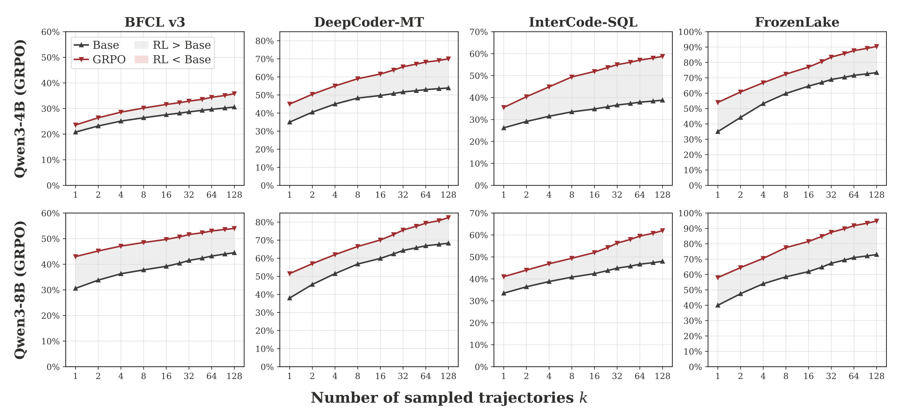
Figure 2 每列对应一个环境，上下分别为四十亿和八十亿参数的 Qwen3 版本。横轴的采样轨迹数依次为一、二、四到一百二十八，横向距离按倍数推进。纵轴是至少一条轨迹通过的成功比例，各面板纵轴范围不同，跨环境只能比较各自曲线差而不能比较像素高度。四组任务在宽度扩张时都能看到较多成功，强化学习曲线通常在基础曲线上方，部分环境的差距随采样数增加仍存在。DeepCoder-MT 与 FrozenLake 尤其能说明，即使基础策略有许多次机会，有限预算下也没有把差距完全填平。BFCL 上方两线较接近，有助于理解平均趋势不能代替任务分桶。图中红灰带是在相同采样数下比较策略成功率，不能把右端强化学习结果与基础左端对比成训练增益，也不能把一百二十八路并发的结果解释成单次服务收益。曲线讨论的是给定环境、测试任务和采样协议下的经验覆盖：它允许推断强化学习给成功路径增加概率质量，但无法断定任意采样数下基础策略均无法追上。附录还在 GiGPO、PPO 与少数其他底座上做宽度对照，适用范围仍受样本与基准限制。
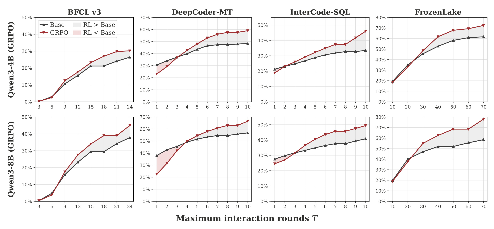
Figure 3 延续图二同样的四环境和两模型排布，唯一改变的横轴是每条轨迹的轮数上限，八次独立采样一直固定。BFCL 最左端三至六轮，绝对成功率都低；随着轮数增加，两模型之间的差距才更清楚。八十亿模型的 DeepCoder-MT 开始几格里，红线落在基础策略之下，随后越过；这说明有些低预算场景训练策略相对退化。FrozenLake 横轴为十到七十轮，绝对单位不能与代码任务的一到十轮换算，地图每步只是一小次状态转移。原文另外用最短路径统计地图结构上界、用人工标注的正确调用轨迹估计 BFCL 上界；DeepCoder 与 InterCode-SQL 可以在单轮提交完整代码或 SQL，理论上限按百分之百处理。即使在低预算条件下尚有结构可解空间，普通强化学习也未必表现更好。上界只说明存在较短路径，不能证明策略在有限观察下知道这条路径。此图与上一个图要共同读取：扩大并行尝试数能抬高同一轮数下找到成功轨迹的机会，但部署若缩短每条轨迹可交互长度，左端的相对排序可能反转。若线上只有一条轨迹，仍需补画固定宽度为一的对应曲线。
这一组结果的价值在于，训练所带来的差别不能用一个总体任务成功率归结成模型能力发生单调变化。报告最大预算的结果，会赋予逐步探索与容错更高权重。预算被截紧后，要求首步直接进入可解决路径，即使会纠错也可能来不及用上。论文的上界检查排除了“低预算处处不可解”的极端解释，但任务何时发现环境、何时获得错误反馈仍会影响曲线。真实产品里还应区分低预算是用户明确要求即时回答、系统已接近超时，还是某个工具预算被消耗，三个事件会提供不同先验和回退选项。
3.2 相同状态下比较动作
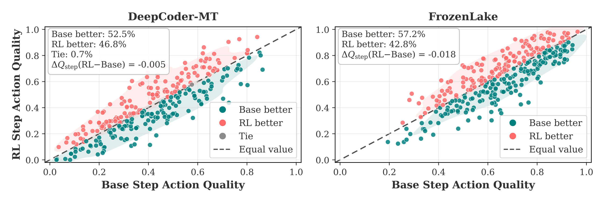
Figure 4 的每个散点是固定历史上的一组配对采样，横坐标为基础模型该步平均质量，纵坐标为 GRPO 模型平均质量。对角线上方红点为强化学习策略更好，下方青点为基础策略更好，等值状态另标。在 DeepCoder-MT 普通池中，基础更好占百分之五十二点五，强化学习更好占百分之四十六点八，平手占百分之零点七。FrozenLake 相应为百分之五十七点二和四十二点八。两图给出的平均差分别为负零点零零五和负零点零一八，幅度较小且方向都偏基础。读图时要把“有多少状态赢”和“平均赢多少”分开，一组策略可能以少量大幅胜出抵消多数微弱负差。地图分数由当前状态下的有限步价值构成，代码分由本次动作的测试覆盖构成；两个纵坐标都在零到一的展示范围，意义不同。配对方案减轻轨迹访问偏差，但状态池并非随机生产流量，平均值也不能概括所有真正危险的不可逆操作。它稳健支撑的是普通状态上不存在一贯的局部升级，不能据此断言模型无任何长程改善。
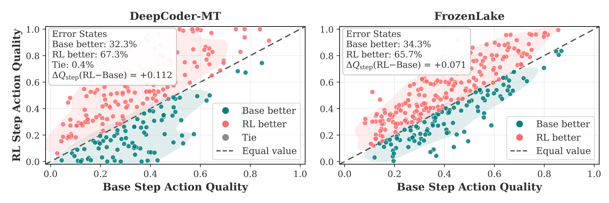
Figure 5 横纵轴保持与普通状态相同，改用上一轮被注入错误的前缀。DeepCoder-MT 中强化学习胜出的状态占百分之六十七点三，FrozenLake 是百分之六十五点七，两图标出的平均动作差变为正零点一一二和正零点零七一。对角线上方更密，且改善可见于多个质量区间，不限于最容易的状态。作者又让两策略从完全相同的错误状态继续执行，地图任务的终局成功为百分之五十一点三比三十八点六，代码任务为三十八点五比二十二点九。这里的终局分母仅为同类错误状态的延续运行，不能与正常起始任务的成功率直接相减。实验也区分两种纠错证据：当前动作的评分改变，和实际继续多轮后恢复成功的概率改变。附录对 BFCL 另取一百九十一条工具失败前缀，其中九十一条来自训练后策略、一百条来自基础策略，比较下一动作更正率百分之四十一点四对二十七点二；个例是删除不受支持的调用参数。它增强了工具域中的方向性证据，仍无法估计随机用户环境中的错误率或在缺乏额外预算时能否救回任务。
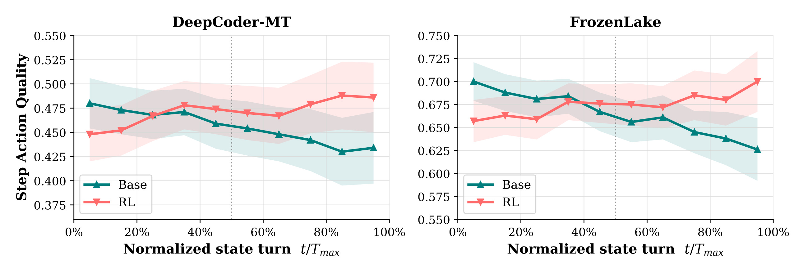
Figure 6 的横轴把轮次除以最大轮数，以百分比显示同一环境里行动位于轨迹前段还是后段，纵轴为分桶后平均单步评分，阴影是百分之九十五置信区间。两个任务前段基础曲线起点更高，随后差距收窄，后段强化学习曲线在图中多数位置高于基础。DeepCoder-MT 里的基础策略质量从前段逐渐走低，强化学习策略在中后段更稳，FrozenLake 的后期差距方向也类似。置信带有重叠，不能把每个相邻位置都解读为经独立显著性检验。尤其要避免把横轴当作每题独立安排的一项随机化干预：后段状态来自没有提前终止的轨迹，其样本组成会受困难实例、被拒动作和反馈可恢复性影响。和图五的错误状态配对合起来读，较合理的解释是多轮策略的优势偏向需要反馈的后半程，而不能逐个轮次推定因果增益。对长会话或搜索助手的验收也应保存前缀和具体错误类型，观察晚段提升来自真实修复、工具返回信息增多，还是仅因轨迹分布变了。
3.3 局部似然与训练轨迹
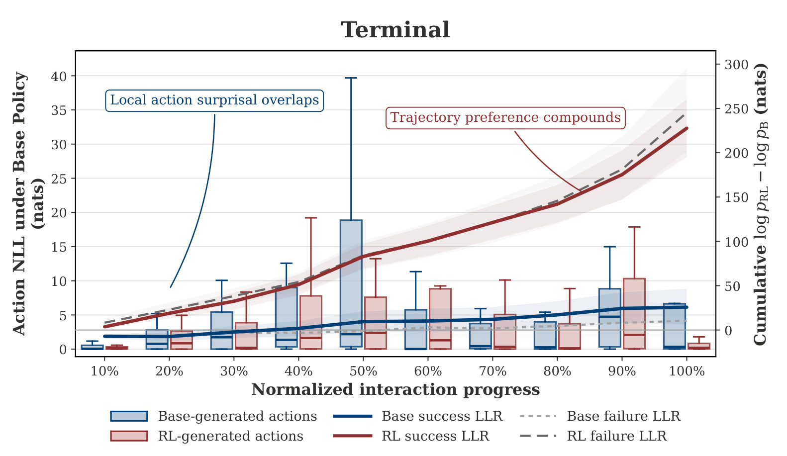
Figure 7 在 Terminal-Bench 把局部惊异度和全程策略差异画在同一坐标里。横轴为归一化交互进度。左轴对应箱线图，两种来源的动作都重新用基础策略打分。原文正文报强化学习生成的动作平均惊异度十二点二，基础自身十点二五，箱体分布仍有大量重合。右轴用曲线画两种策略对完整响应的累计对数似然差，并分开基础生成、强化学习生成及成败。强化学习成功轨迹的均值到末端约二百二十八，基础成功轨迹约二十六，说明同样能被基础策略生成的单步动作，并不等于连续组织成长链条也有相同概率。箱线和曲线度量的词元范围不一样，右轴还包括推理文本，不能把两条线的像素距离当作动作质量差。附录用 BFCL 补做并在长度匹配后保留累积差异，降低“只因为输出更长”这一解释的可能性。轨迹按来源和成败事后分组，成功前缀中有哪些环境反馈仍不是随机处理，也不能由似然差推出某一局部动作在因果上改进。
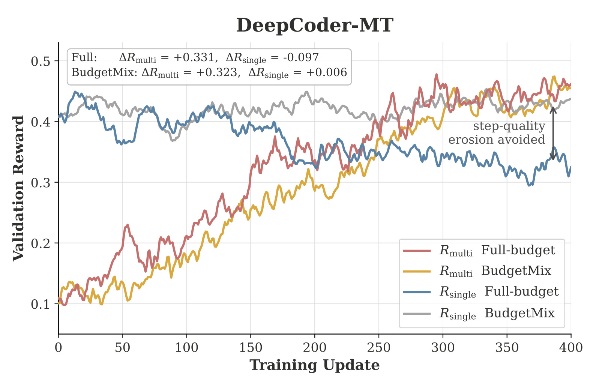
Figure 8 横轴是训练更新步，纵轴是验证奖励，两条上行曲线分别是固定全预算与混合预算的终局奖励，两条较平缓或下行的曲线为同一验证状态池上的单步奖励。图中文字报告，全预算从起点到末端终局奖增加零点三三一，单步奖下降零点零九七。BudgetMix 终局奖增加零点三二三，单步奖微增零点零零六。在这里应比较同类奖励随训练更新的走势，不能比较终局奖和单步奖的绝对高度。单步诊断用从基础模型轨迹取出的五百一十二个保留状态，每个检查点每状态采八个下一动作，确保模型变化之外的样本构成尽量固定。它与图四每状态十六动作且双方轨迹混合的池不同。FrozenLake 附录给出方向类似的结果，混合预算单步曲线末端约高于标准训练零点一。曲线显示终局目标上升和局部目标下降可以共存，混合训练减缓了这类局部劣化；但横轴是更新次数而非 GPU 小时，附录没有给足以把这种走向解释成等墙钟训练优势的证据。
3.4 过程监督与预算混合
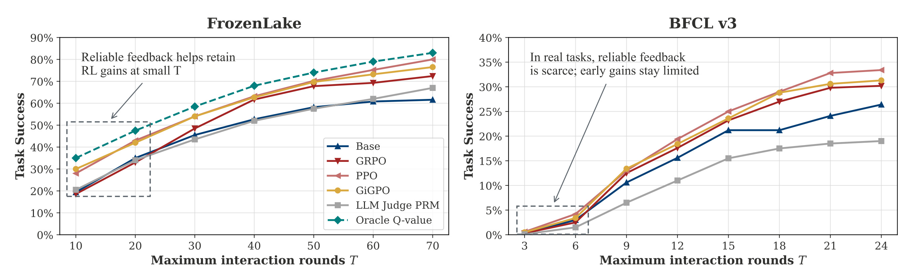
Figure 9 两图横轴均为单轨迹允许的最大交互轮数，纵轴是任务成功率，保留基础、不同强化学习算法和可得过程监督的曲线。左侧 FrozenLake 可以使用真实转移构建 oracle 价值，较低预算时这条线相对基础和普通终局训练明显更高，GiGPO 也有帮助。可验证的转移结构让过程信号能够对眼下动作提供后续可达性的反馈。右侧 BFCL 缺少同类真值，低预算时 PPO、GiGPO 与 GRPO 的改善更有限，裁判过程奖励曲线在不少轮次落到基础以下。图中算法与外部评分路线的比较并非只更换一个标量系数，较稳妥的用途是把“提供更多中间监督”与“提供正确中间监督”区分开。低轮数时，如果某次工具调用看似合理、实际参数无效，代理又没有轮数来修复，错标这类动作就会对终局影响更大。附录裁判在动作执行前给分，因此难以用真实执行结果纠正自己的判断。冻结地图能说明精确过程标签可缓解预算依赖，不能假定工具系统也能低成本获得同等质量标签。
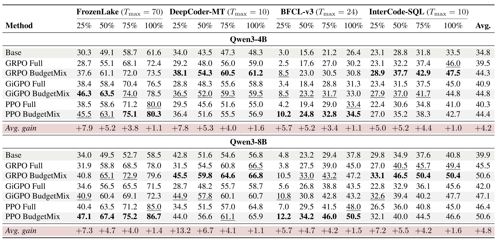
Table 1 从左到右是四个任务组，每组四列对应最大交互预算的百分之二十五、五十、七十五、一百。上下分别为两种 Qwen3 规模，同一组里先列基础策略，再将 GRPO、GiGPO、PPO 各自的全预算与混合预算逐对比较。最右均值涵盖四环境与四档预算，浅色行的 Avg. gain 是同算法配对差再平均，以百分点表示。四十亿和八十亿两组总均值分别提高四点二和四点八个百分点。正文跨设置报告紧预算平均提高七点五、五点三、四点零个百分点，满预算大体接近。最显著的紧预算例子之一是八十亿的 DeepCoder-MT，GiGPO 从二十八点七提高到四十四点九，PPO 从三十四点五到四十四点零；GRPO 由三十一点五到四十五点五。这些数是八条轨迹至少成功一次的评测结果。八十亿 BFCL 的 GiGPO 满预算从四十三点五变为四十三点二，四十亿 InterCode-SQL 的 GiGPO 满预算从四十五点零到四十四点八。原文的满预算整体保持只能读作聚合趋势，不能说全部格都改善。四十亿基础版 DeepCoder 最紧档还有三十四点零，证明普通全预算强化学习在该档的二十九点二并非受环境完全无解限制；BudgetMix 同算法的三十八点一又超过这个基础数。表中强调行内名次和均值，没有给每个格子的配对置信区间，微小下降和微小上升都要保留其精度与不确定性。横向读百分比时还要核对每个任务的绝对轮数。例如同为四分之一最大值，工具调用与代码提交所获得的动作次数以及反馈时机都不同。平均行给每格相同地位，并非按线上任务比例加权，因此表里的平均分不直接对应某个现网流量混合。若某类请求大量集中于最紧预算，部署评估应单列那一档和单路成功。
训练分布变化是否意味着首步全面改善，还需参考附录的 matched-state 探针。附录的 BudgetMix 普通状态配对显示局部质量改善，主文图八也指向同一方向，但主表依然是多次采样的整体指标。假如一个短预算策略学会更早返回已有可行解，那么它能改善低预算成功；假如任务需要至少若干个探索步骤，过紧预算样本又可能只有零回报，效率取决于可解性构成。原文没有在同一数据上系统扫描最短档的概率质量、按任务难度选预算、直接使用墙钟或工具调用费用约束。由此可以把“换训练预算分布有效”视为一个已在四个任务中检验的整体结果，把“怎样分配训练轮次最省资源”留作独立问题。
这套证据链还需要区分两类模型改变。宽度曲线中的标准 GRPO 讨论多轮 RL 相对于基础策略；表一的配对条目讨论在保持训练算法时，修改预算分布的相对结果。前者不能被后者解释为全由预算随机化产生，后者也不要求否定标准策略在富预算下的执行优势。若部署的交互协议从聊天工具切换到多工具并行，轮数对真实动作次数的含义会改变，原来的整条曲线只能作为待重新校准的证据，而不能直接把四档比例照搬过去。
4. 总结
4.1 对智能体与推荐链路的启发
文章给出的实用划分是把第一次做对和做错后恢复分别测量，再按产品容许的交互机会测终局。以购物助手为例，首次搜索前可以先判断用户是否已提供品类、规格和地区。若意图明确且只允许一个检索调用，模型应优先用正确参数拿到可售候选；用户需求还不确定且允许来回交互时，澄清、检索和换条件的价值会上升。对于下游排序，可用固定候选和固定历史比较首个重排动作，再单独造出库存刚失效、过滤后为空和检索工具拒绝三类状态，测策略能否在剩余预算内找回合格候选。这样的协议把推荐质量与救回流程的能力置于不同分母，也把某些类别的失败归因到工具或约束而非统称模型弱。
对长程语言模型训练，抽预算的改动小，但评测协议要更细。相同任务可以有多个可行行动序列，宽松上限下可以先做便宜的探索动作并把失败留给后续修复，紧上限下则需要优先完成有效步骤。预算提示让策略有条件地学习这些模式，避免每个预算都训练单独模型。若训练组使用共享预算，统计上的比较仍只在相同约束下进行。部署时再把模型的轮次敏感性与排队、输入长度、工具反馈的延时联合看，才知道预算收紧是否确实有利于产品。文章的成功曲线和局部配对探针给出方向，业务端需要补上真实成本与风险的指标。
4.2 局限与复现路线
- 轮数代理与线上成本有差距。 地图一次移动、提交完整代码与调用外部服务都可记作一轮。代码执行、并发工具和重试可能消耗完全不同的时间及资源。报告未量化同一成功率下工具费用、输入输出词元和尾延时。把已训练的轮数控制改成墙钟控制还会遇到异步工具、超时中断与未返回观察等新状态。
- 局部价值高度依赖可验证任务。 FrozenLake 可以用已知转移求有限视野价值，DeepCoder-MT 有单元测试。开放工具的可靠过程标签更难获得，裁判可能在执行前给不可行方案较高分。错误池采用注入或挑选已有失败前缀，其错因混合比真实线上事故分布更窄，不能外推总体错误发生率。
- 宽度曲线与平均增益存在分母约束。 主表是 Pass@8，不能代替单路成功、首次调用正确率或用户满意度。满预算存在个别下降，且表格不逐格给出统计区间。宽度扫到一百二十八也只约束有限范围内的经验能力。训练过程按更新次数展示，GPU 成本和调用总量仍需另计。
- 长度与策略似然不能给动作层的因果识别。 附录的长度匹配减少一种偏差，完整响应仍包含推理和操作。原文对动作 NLL 求和及图文中按词元表述也值得通过代码再核对。对同一实际轨迹重新打分，不会生成反事实的工具观察；不同模型遇到不同环境反馈的影响仍然存在。
- 短预算是否可学取决于采样结构。 最短可行轮数、错误类型和任务难度变化会改变组内可用正例。均匀抽取去重整数档属于初步设计。对长链任务提高极短档比例，可能令全组奖励同时归零；在较简单任务中过多采富预算又可能降低训练资源利用率。
复现时先固定任务实例、工具版本和采样温度，画出宽度一与宽度八、不同轮数上限的成功矩阵，并把任务分为原则上可在该预算内解决与不可解决。第二步固定普通历史和错误历史，报告首步任务分、修复成功与继续执行的终局结果，分别记录错误发生阶段、工具反馈是否可见和剩余轮数。第三步对照全预算、论文的均匀去重预算和按服务实际预算频率采样三种训练，统计各档有效组比例、总 rollout 词元、工具执行数与墙钟，并单独复核满预算负向格。对于不允许回滚的工具操作，应将危险动作、权限拒绝和后续补救明确分开验收，让恢复能力和首次行动质量都具备直接的生产解释。